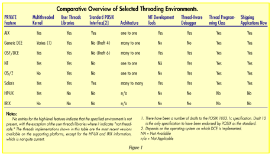
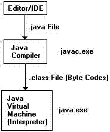

hyPACK-2013 Mode 1 : Software Threading : Java Threading
|
Multi-threading is extremely useful in practice and it has distinct capabilities for
Java application. The Java programming language itself uses a thread to to garbage
collection in the background - thus saving managing of memory for complex applications.
Multi-threading changed in JDK 5.0, with the addition of a large number of
classes and interfaces that provide high-quality implementations of the mechanisms that
most application programmers will need.
The new features of JDK 5.0 and issues such as Interrupting Threads, thread States,
thread properties, synchronization, blocking queues, thread safe collections,
callable and futures, executors, synchronizers, and Threads & Swing require serious
attention to understand overheads in thread programming.
Example programs using different APIs. Compilation and execution
of java threads programs, programs numerical and non-numerical computations
are discussed using different thread APIs and understand Performance issues
on multi-core processors.
|
List of Java Threads Programs
-
Java APIs on Multi-Core Processor Systems : Example programs on
computation of the sum of n natural numbers, search the minimum integer in an unsorted
integer array,
computation of Vector-Vector Multiplication using block-striped method, Computation of matrix - matrix
multiplication, and implementation of Producer-Consumer model problem.
-
Java Concurrent APIs on Multi-Core Processor Systems :
Examples include Writing programs for sorting an unsorted array using Sorting algorithm,
rank calculation for a large array, calculate power of n , concurrently read and write a
memory block using new read-write lock (new concurrency Java APIs) than old synchronization
construct, concurrently read and write to a concurrentHashMap collection (new concurrency Java APIs)
and compare performance with old Hash-table collection, concurrently read and write to a vector and
ArrayList collection and
analyze the performance, CopyOnwriteArrayList collection which is thread safe version of old ArrayList
collection, allows concurrent updation on ArrayList while iterating.
|
|
Java : History
|
|
Java was started as a project called "Oak" by James Gosling in June 1991. Gosling's goals were to implement
a virtual machine and a language that had a familiar C-like notation but with greater uniformity and simplicity
than C/C++. The first public implementation was Java 1.0 in 1995. It made the promise of "Write Once,
Run Anywhere", with free runtime on popular platforms. It was fairly secure and its security was
configurable, allowing for network and file access to be limited.
|
|
Introduction Java Threads : Multi-Core Processors
|
|
A multi-core microprocessor is one that combines two or more independent processors into a single package. The
typical multi-core processor implements multiple processors that share a single coherent cache at the highest on-device
cache level (e.g. L2 for the Intel Core 2.) The processors also share a single interconnect system (usually a bus)
to the rest of the system. The proximity of multiple CPU cores on the same die have the advantage that the cache
coherency circuitry can operate at a much higher clock rate, combining equivalent CPUs on a single die significantly
improves the performance. In this new era of multi-core computing, Moore's law can be applied to the number of cores.
Current multi-core architectures
consist of only a few cores, but this number is expected to increase as exemplified by the announcement of 80
core architecture
by Intel.
Software designers are challenged to efficiently exploiting the
massive parallelism available on these
future multi-core architectures.
According to Moore's law the number of transistors on a single die is doubling every two every years. During the last decades
this evolution has lead to an exponential performance increase because processor clock speeds also doubled at the same rate.
Due to power limitations this clock speed doubling came to an end. Computer architects came up with the idea of multi-core
computing: large and complex processors are re-placed by simpler and slimmer cores working together.
The parallelization of sequential code on multiple core processors may meet complex challenges and the software designers
have to exchange the conventional sequential programming paradigm for parallel programming. The transition requires
a fundamentally different way of thinking about algorithms and programming problems.
Parallel programming language and programming models are needed to help programmers with this parallel thinking.
Multi-Threaded programming languages can be used to describe parallel behaviors, .i.e. Java. The programming
language Java alone is not sufficient, because multi-threaded programming is cumbersome.
Communicating Sequential Processes (CSP) is a precise mathematical theory of concurrency that can be used to build multi-threaded applications that are guaranteed to be free of the common problems of concurrency. Concurrent programming is a technique that provides for the execution of operations simultaneously, whether on a single system or spread across a number of systems. Such operations are essentially sequences of instructions, such as the subtasks for a single top-level task that can be executed in parallel, either as threads or processes.
The essential difference between threads and processes is that while processes are typically independent (separate address spaces, for example) and can therefore interact only through system-provided interprocess communication mechanisms, threads typically share the state information of a single process and can share objects in memory and system resources directly.

|
|
An Overview of Java-threads
|
The Java programming language is naturally multi-threaded and because of this the underlying OS implementation can make a
substantial difference in the performance of
Threads.Threads are a fundamental part of the Java platform. As multi-core processors become the norm, using concurrency
effectively becomes essential for building high-performance applications. using concurrency effectively becomes essential
for building
high-performance applications Java thread Programming may help the developer. Java SE 5 and 6 are a huge
step forward for the development of concurrent applications, with improvements to the Java Virtual Machine to
support high-performance, highly scalable concurrent classes and a rich set of new concurrency building blocks.
Java are a huge step forward for the development of concurrent applications,
with improvements to the Java Virtual Machine to support high-performance, highly scalable concurrent classes and a rich
set of new concurrency building blocks. The developer can choose from multiple threading models and different methods of
synchronization within the model, but this varies from one Virtual Machine to Virtual Machine.
Java is a sequential programming language that features Object-Orientation and multi-threading. However, multiple threads
can run in parallel processes and are created in a sequential fashion.
A concurrent program is a single program that consists of several processes running in parallel. A process is a sequential
program in execution. A concurrent program has control over its processes. Processes are highly independent, because they
are bounded to their task, and they provide fundamentals of the structure of the program.
The concept of multi threading within a sequential programming language, such as Java allows us to create processes running
in parallel. Processes and threads are conceptually related. A process is the actual program executed by one or more threads.
The process maintains its program structure and state, i.e., objects and variables. A thread is a single flow of control that
can execute its instructions independently.
Communication between processes can be established by means of shared memory or by interprocess-communication (IPC) facilities.
Java provides communication through shared-memory, message passing, input/output streams and remote links. Channels are
also used in Java for communication.
Programming Java threaded applications to run on multi-core processors is much tougher than programming for their
single-core counterparts. While multiple applications can easily run on different cores, you must
meticulously code applications to take advantage of multi-core technology. This means that existing
applications must likely see the performance increase, if any, when running on a modem multicore machine.
Java-thread Programs having the following characteristics may be well suited :
The decomposition of a single application into several, dependent and interacting tasks.
Work that can be executed, or data that can be operated on, by multiple tasks simultaneously
low synchronization and low communication overhead is required in design of algorithms
Block for potentially long I/O waits
Use many CPU cycles in some places but not others
Must respond to asynchronous events
Some work is more important than other work (priority interrupts)
Efficient load balancing of work across threads
Scalability of application on 4/8/16/32 cores to get expected performance
In Java Concurrency in Practice, the creators of these new facilities explain not only how they work and how to
use them, but also the motivation and design patterns behind them.
However, developing, testing, and debugging multi-threaded programs can still be very difficult; it is all too
easy to create concurrent programs that appear to work, but fail when it matters most: in production,
under heavy load. Java Concurrency in Practice arms readers with both the theoretical underpinnings and
concrete techniques for building reliable, scalable, maintainable concurrent applications. Also, it provides design rules,
patterns, and mental models that make it easier to build concurrent programs that are both correct and performance.
The Java Virtual Machine (JVM) allows creating multiple Java threads. It is well known that standard JVM may run only
on single java process, but any number of threads. JVM internally implements the mapping of threads onto real OS threads.
Threads in Java
is a runnable object and Synchronization in Java can be achieved by critical sections in which code segments allowing
access to shared data from multiple threads. Also access to shared data required mutual exclusion to ensure atomic
operations. Basic synchronization mechanism in Java is monitor and java.util.concurrent library provides many
other synchronization primitives. Threads usually communicate via queues.
Creating Java Thread :
In Java, each thread is represented by an object of class java.lang.Thread, which handles the necessary
bookkeeping and provides methods for controlling the thread.
To create a new type of Java thread, you write a class that does one of the following:
Inherits from the class java.lang.Thread
Implements the interface java.lang.Runnable
Usually, it is better to implement Runnable than to extend Thread, because extending Thread means you can't extend any other class.You put the code you want executed by the thread into the run method of your new class
The Thread class has constructors that accept various combinations of the following parameters:
A Runnable object, whose run method will be executed within the thread
A ThreadGroup object, determining the thread group in which the thread will be created
A name for the thread (a String), which is used mostly for debugging output
Starting and Terminating Threads :
The start method - which takes no parameters - starts
the run method (either the one in the class itself, or the one in a provided Runnable) in a new thread
A thread terminates when the run method returns, either successfully or because of an unchecked exception A terminated thread cannot be restarted.
Thread Interleaving Example
public class Test implements Runnable
{
private int number;
public Test(int number)
{
this.number = number;
}
public void run()
{
for (int i = 0; i < 2; i++)
{
System.out.print("I am thread number " + number);
System.out.println();
}
}
public static void main(String[] argv)
{
for (int i = 0;i < Integer.parseInt(argv[0]); i++)
{
Thread thread = new Thread(new Test(i));
thread.start();
}
}
}
Thread Control - Interrupt
Each thread has an interruption status (a boolean) Calling interrupt on a Thread object has one of two
effects
- If the thread is sleeping or waiting, an InterruptedException is
raised in the thread and its interruption status is set to false
- If the thread is doing anything else, its interruption status is set to
true
A thread determines its interruption status with the static method Thread.interrupted. This is a very basic form of inter-thread communication
public class Interruptee implements Runnable
{
public void run()
{
while (!Thread.interrupted())
{
System.out.println("No interrupt yet.");
}
System.out.println("Finally, an interrupt!");
}
public static void main (String[] argv)
{
Thread thread = new Thread (new Interruptee());
thread.start();
thread.interrupt();
}
}
Thread Control - Join
Calling join on a Thread object t causes the calling thread to suspend until the target thread has completed. The call returns when t.isAlive is false .If a timeout is specified, the call returns when the timeout expires even if the target thread is still running.You should only call the join method on threads you created - otherwise, you don't necessarily know how they will behave.
public class Joinee implements Runnable
{
public void run()
{
for (int i = 0; i < 5; i++)
{
System.out.println("Line number " + i);
}
System.out.println]("Thread exiting.");
}
public static void main(String[] argv)
{
Thread thread =new Thread(new Joinee());
System.out.println("Starting thread.");
thread.start();
thread.join();
System.out.println("Thread terminated.");
}
}
Thread Control - Static Methods:
The Thread.sleep method takes as a parameter a long number of milliseconds, and causes the current thread to suspend for at least that amount of time
Synchronization
Thread Control - Join
Java has constructs for synchronization that, when used properly, can ensure that only one thread is accessing a particular object at any given point in the computation.The synchronization construct in Java is the lock, and
the Java keyword synchronized is used to manipulate locks
There are two ways to use the synchronized keyword: block synchronization and method synchronization
- Block Synchronization
The syntax for block synchronization is:
synchronized (object-reference)
{
// I hold the lock on object object-reference.
}
Block synchronization allows you to lock any object,anywhere in your code .The most common usage is to lock this
Block Synchronization Example
public class BlockSync
{
private static Object lock =new Object();
private int number;
public void run()
{
for (int i = 0; i < 2; i++)
{
synchronized (lock)
{
System.out.print("I am thread number"+number);
System.out.println();
}
}
}
public BlockSync(int number)
{
this.number = number;
}
public static void main(String[] argv)
{
for (int i = 0;i < Integer.parseInt(argv[0]); i++)
{
Thread thread =new Thread(new BlockSync(i));
thread.start();
}
}
}
Method Synchronization
The syntax for method synchronization is to add the keyword synchronized at the beginning (anywhere in the modifier list) of a method declaration, such as:
synchronized Object getObjectAt(int position)
{ /* body */ }
Method synchronization is exactly equivalent to block
synchronization of the entire method on this:
Object getObjectAt(int position)
{ synchronized (this) { /* body */ } }
The synchronized keyword is not part of a method's signature; this has two important effects
When you override a synchronized method in a child class, the new method is not automatically synchronized you must use the keyword again.The superclass method remains synchronized, so if you call it with super.foo(), the synchronization behavior is as expected Methods in interfaces cannot be declared with the synchronized modifier.
- Acquiring and Releasing Locks :
All locking is based on blocks - a lock is acquired when a synchronized block or method is entered, and released when it is exited. Locks operate per-thread, so if a thread already holds a lock for a particular object and hits another synchronized block for that object, it doesn't suspend. This is called reentrant locking.If an object has both synchronized methods and normal methods, the normal methods may be executed at any time (even if a thread is executing a synchronized method)
- Locks and Static Fields and Methods :
Locking an object doesn't have any effect on access to static fields or methods of that object's class Access to static fields can only be protected using synchronized static methods or blocks, since fields cannot be synchronized. Synchronization on static methods and blocks acquires and releases the lock for the Class object associated with those methods and blocks.
Advantages of Java Multi-threading on Solaris :
Sun's Java Virtual Machine (JVM), central to the performance and scalability of the Java Development Kit (JDK) for Solaris, is designed to take full advantage of multi-processor computing systems by using the native multi-threading capabilities of Solaris. It performs byte-code interpretation using native multi-threading and fast synchronization . These features provide developers with significant performance boosts required for successfully developing and deploying Java applications that deliver solid performance and fast response times under peak loads.
Java on Solaris leverages the multi-threading capabilities of the operating system kernel while allowing developers to create powerful Java applications using thousands of user-level threads, if needed, for multiprocessor or uniprocessor systems through a very simple programming interface.
The Java on Solaris environment supports the many-to-many threads model. As illustrated in Figure 1, the Solaris two-level architecture separates the programming interface from the implementation by providing an intermediate layer, called lightweight processes (LWPs). LWPs allow application developers to rapidly create very fast and cheap threads through a portable application-level interface. Developers simply write applications using threads. The runtime environment, as implemented by a threads library, multiplexes and schedules runnable threads onto "execution resources," the LWPs.

Individual LWPs operate like virtual CPUs that execute code or system calls. LWPs are dispatched separately by the kernel, according to scheduling class and priority, so they can perform independent system calls, incur independent page faults and run in parallel on multiple processors. The threads library implements a user-level scheduler that is separate from the system scheduler. User-level threads are supported in the kernel by the kernel-schedulable LWPs. Many user threads are multiplexed on a pool of kernel LWPs.
Solaris threads provide an application with the option to bind a user-level thread to an LWP or to keep a user-level thread unbound. Binding a user-level thread to an LWP establishes an exclusive connection between the two. Thread binding is useful to applications that need to maintain strict control over their own concurrency, such as those that require real-time response.
Since most Java applications would not require it, there is no Java API to perform the binding. If required, a Solaris native method call can be made to perform the binding. Therefore, all Java threads are unbound by default. Unbound user-level threads defer control of their concurrency to the threads library, which automatically expands and shrinks the pool of LWPs to meet the demands of the application's unbound threads
The Solaris two-level model delivers unprecedented levels of flexibility for meeting many different programming requirements. Certain programs, such as window programs, demand heavy logical parallelism. Other programs, such as matrix multiplication applications, must map their parallel computation onto the actual number of available processors. The two-level model allows the kernel to accommodate the concurrency demands of all program types without blocking or otherwise restricting thread access to system services.
Evaluating Multi-threading Capabilities with Real-World Application :
While benchmarks can be a valuable tool to assess the performance and stability of an application, the true test is in real-world implementation.
The latest in JVM technology for Solaris is currently being evaluated as part of an early access program by several real-world Internet applications, including Vitria's BusinessWare application integration software and Volano's VolanoChat, which allows Web developers and businesses to create easily customized chat rooms for their public Websites and corporate intranets.
As a result, these highly threaded, highly networked, multiuser applications are realizing tremendous gains in Java performance, further demonstrating that the Java on Solaris threading model delivers the best combination of speed, concurrency, functionality and kernel resource utilization.
Because of the flexible manner in which the Solaris Java Virtual Machine maps Java
threads to its kernel, there are no predefined limits on the number of threads that can be used per application, according to John Neffenger, CTO, Volano LLC. "We have reason to believe that the new version of the Solaris JavaVirtual Machine coming out from Sun later this summer will be the platform with all the speed, scalability, and stability that Java deserves."
|
|
Java thread categories
|
|
Two different threading models commonly used are a many-to-many model and a one-to-one model. Many-to-many and one-to-one
refer to (essentially) LWPs (lightweight processes) and Solaris Threads. For example Java threads are really Solaris Threads.
The major challenge is to achieving thread synchronization in many-to-many model on Multi-Core processors in Java Threading model.
Also, for large number of threads on Multi-Core processors, the factors such as the thread stack size, thread local heap,
garbage collection affects, and extensive shared memory and handling data race conditions play an important role for Java
threads on Multi-Cores. The other factors that could affect the application performance are to analyze the large numbers
of threads or cpus.
Process-oriented programming, based on CSP (Communicating Sequential Processes) principles, aims to make concurrency easy for developers.
In order to provide this concurrency, developers of CSP implementations must use (or implement) a threading mechanism. When running
on top of Operating System (OS), such threading mechanisms fall into three main categories: user-threads, kernel-threads and hybrid
threading models.
Threading categories :
User-threads (also known as user-space or user-level threads) are implemented in user-space and are invisible to the OS kernel.
They are co-operatively scheduled and provide fast context switches. Intelligent scheduling can allow them to be more efficient
than kernel-threads by reducing unnecessary context switches and unnecessary spinning. However, they do not usually support preemption,
and one blocking call blocks all the user-threads containing in a kernel-thread. Therefore blocking calls have to be avoided,
or run in a separate kernel-thread. Only one user-thread in a kernel-thread can be running at any time, even on multi-processor/multi-core
systems.
Kernel-threads (Also known as kernel-space or kernel-level thread ) are implemented in the OS kernel. They usually rely
on preemption to perform scheduling.
Due to the crossing of the user-space/kernel-space divide and other overheads, a kernel-thread context switch is slower than
a user-space context switch. However, blocking calls do not cause any problems like they do with user-threads and different
kernel-threads can run on different processors simultaneously. JCSP (on Sun's Java Virtual Machine on most operating Systems) uses
kernel-threads.
Hybrid models (also known as many-to-many threading ) mix kernel threads and user-threads.
For example SunOS contained (adapting their technology to that user here) multiple kernel-threads, each possibly containing multiple
user-threads, which would dynamically choose a process to run from a pool, and run the processes until it could no longer be run.
Much research on hybrid models has involved the user-thread and kernel-thread schedulers sharing information.
The speed of kernel-threading is increasing on multi-Core systems. The development of NGPT (Next Generation POSIX Threads)
library for Linux alongside the NPTL (Native POSIX Thread Library) are interesting research areas of work which are in progress,
NGPT was complex hybrid threading library, whereas NPTL was primarily centered on a speed-up of kernel-threading. NPTL is now
the default library for Linux
|
|
|
|
Java thread programing Challenges
|
|
In general, programmers are facing problems when they make the transition from the conventional programming paradigm into the new era of
parallel programming.
New programming models and tools can support this transition. The recent approaches to
extending the Java language to make it more suitable for programming multi-core architectures are interesting. The main aim is
pose some new ideas
and extensions to alleviate the burden of parallel programming. Some efforts on implementation of run-time environment - build on top of
the Java virtual machine - to execute parallel threaded programs is going on.
The Java thread Programming users should understand concepts of
synchronization, critical section and deadlock conditions.
Synchronization
is an enforcing mechanism used to impose constraints on the order of execution of threads.
The most important challenge for Java thread programmers is the decomposition of a single application into several, dependent
and interacting tasks. The efficiency of the parallel program is highly dependent on this decomposition step: it determines
the synchronization and communication overhead. Other challenges are synchronization and communication between parallel threads. Synchronizing parallel threads is a tedious
task: synchronizing too often leads to inefficient program execution but not enough synchronization can lead to incorrect results
due to the data races or condition hazards. Faulty synchronization can lead to deadlocks.
The load balancing is another important challenge and achieving an appropriate decomposition of the problem in
several tasks that can be run on multiple cores.
A special care is needed about executing these tasks efficiently in parallel and division of the work load equally among all these cores
is important and avoid the some cores remain idle for long time.
A related challenge is scheduling of these parallel threads and tasks. Another challenge is to discuss the scalability of application.
This is equivalent to execute the same application on single core architecture as well as on a multi-core architecture with 4 cores as on
an architecture
With 80 cores and think about scalability. The following questions require answers on Java threaded application
on Multi cores.
Can we describe our parallel algorithms in such a way that we can exploit the parallelism on an 80 core machine ?
Can our parallel algorithms execute efficiently on Dual /Quad Core ?
Can Java thread Programing tools available to address challenges ?
Can the performance of Java threads on Multi-Core Systems requires trace-based statistics ?
Can flexible visualization technique analyze the trace data of java-thread application ?
The programming language Java has multi-threading capabilities for concurrent programming. To provide synchronization between
asynchronously running threads, the Java language and runtime system uses monitors . The concept of Communication
Sequential Processes (CSP) implementation in Java is popular in the recent past. In CSP channels and composition constructs
are described to provide well-behaved communication between processes i.e. threads. Instead, Java provides general concepts
for implementing communication constructs that are as flexible as possible.
Thread safety and synchronization
A method in a Java object is said to be thread safe if it can be safely run in a multi-threaded
environment. To achieve this safety, there must be a mechanism by which multiple threads running
the same method can synchronize their operations, such that only one of them is allowed to proceed
when accessing the same object or lines of code. This synchronization requires the threads to communicate
with each other using objects called semaphores.
One specific type of semaphore is called a mutual exclusion semaphore or a mutex. As the name indicates, ownership of this semaphore object is mutually exclusive, in that only one thread can own the mutex at
any given time. Any other thread that tries to acquire ownership will be blocked and must wait until
the owning thread releases the mutex. If multiple threads are waiting in line for the same mutex,
only one of them will get it when it is released by the current owner; the others will continue to block.
The concept a monitor is a body of code whose access is guarded by a mutex. Any thread wishing
to execute this code must acquire the associated mutex at the top of the code block and release
it at the bottom. Because only one thread can own a mutex at a given time, this effectively ensures
that only the owing thread can execute a monitor block of code. (The guarded code need not be
contiguous -- for example, every object in the Java language has a single monitor associated with it.)
Any developer with exposure to thread programming in the Java language will immediately recognize
the above as the net effect of what the synchronized keyword does. Java code enclosed within a
synchronized block is guaranteed to be run by a single thread at any given time. Internally, the
synchronized keyword is translated by the run time into a situation wherein all contending threads
are trying to acquire the (single) mutex associated with the object instance on which they (the threads)
are operating. The thread that succeeds in acquiring the mutex runs the code and releases the mutex when
exiting the synchronized block.
Waiting and notification
The construct of wait/notify also plays an important role in the Java language's inter-thread communication mechanism. The essential idea is that one thread needs a certain condition that can be brought about by another thread to become true. It therefore waits for the condition to be met. Once the condition is true, the causing thread notifies the waiting thread to wake up and proceed from where it left off.
The wait/notify mechanism is much more difficult to understand and reason about than the synchronized mechanism. To reason about the behavioral logic of one method that uses wait/notify requires that you reason about the logic of all the methods using it. Reasoning about one method at a time, in isolation from others, is a sure means to arriving at incorrect conclusions about the overall system behavior. Clearly, the complexity of doing this increases very rapidly as the number of methods to be reasoned about increases.
Thread states
The start() method of a newly created thread must be called to start its execution. However, simply calling the start() method need not imply the thread starts running immediately. This method just changes the state of the thread from new to runnable. The thread state becomes running (from runnable) only when it is actually scheduled for execution by the OS.
Typical OS support two threading models cooperative and preemptive . In the cooperative
model, each thread has the final say on how long it will retain control of the CPU and when it will give
it up. In this model, because a rogue thread may never relinquish control, the other threads may never get
to run. In the preemptive model, the OS itself uses a timer on the clock "ticks" on which it can abruptly transfer control from one thread to another. In this case, the scheduling policy that decides which thread
will gain control next may be based on a variety of criteria, such as relative priorities, how long a
particular thread has been waiting to execute, etc.
A thread in the running state can enter the blocked state if it decides to sleep for some reason, needs
to wait for a resource (for example, for input data to arrive on a device, or for notification that
some condition has been set), or is blocked while trying to acquire a mutex. A blocked thread reenters
the runnable state when either the sleep period expires, the expected input arrives, or the current
owner of the mutex has released it and notified the waiting threads that the mutex is up for grabs
again.
A thread terminates when its run() method completes, either by returning normally or by throwing an unchecked exception such as RuntimeException . At this time, the state of the thread is dead. Once a thread is dead, it cannot be restarted by re-invoking its start() method, as doing so will throw the
InvalidThreadStateException.
|
|
|
|
Pitfalls multithreaded programming in the Java language
|
|
Four common pitfalls multi-threaded programming in the Java language
Multi-threaded programming in the Java language is facilitated by a number of well-designed constructs supported by the language. In addition, a large collection of design patterns and guidelines
have been devised to help you steer clear of the many pitfalls of this complex undertaking.
In spite of this, it is very easy to inadvertently introduce a subtle bug into your multi-threaded code and, more importantly,
such problems are just as difficult to analyze and debug. What follows is a list of the most common problems
you'll encounter (and likely have encountered) while attempting multi-threaded programming in the Java language.
Race conditions
A race condition is said to exist in a system when there is contention for a shared resource between multiple threads and the winner determines the behavior of the system. Allen Holub provides a very simple example of a multi-threaded program with this bug in his article "Programming Java threads in the real world" (see Resources). An even more insidious consequence of incorrect synchronization between conflicting access requests is data corruption, wherein the shared data structure is partly updated by one thread and partly by another. In this case, instead of the system behaving per the winning thread's intent, it behaves according to neighbor's intent, so that both threads end up losing.
Deadlocks
A deadlock is a condition where a thread is blocked forever because it is waiting for a certain condition to become true (such as a resource being available), but the condition is prevented from becoming true because the thread that would make it true is, in turn, waiting for the first thread to "do something." In this way, both threads are waiting for the other to take the first step and neither is able to do anything. Read Allen Holub's article (see Resources) for examples of how deadlocks can happen in multi-threaded Java code.
Livelocks
A livelock, unlike a deadlock, happens when threads are actually running, but no work gets done. This usually happens when the two threads are working at cross-purposes, so what is done by the first thread is undone by another. A simple example is where each thread already holds one object and needs another that is held by the other thread. Now imagine a situation wherein each thread puts down the object it possesses and picks up the object put down by the other thread. Clearly, these two threads can run forever in lock-step, effectively managing to achieve nothing at all. (A common real world example is when two people approach each other in a narrow corridor. Each person tries to be polite by moving to one side to let the other one pass, but both keep moving to the same side at the same time, thereby ensuring that neither can pass. This continues for some time, with both of them swaying from side to side and no progress being made.)
Resource starvation
Resource starvation, also known as thread starvation, is a consequence of the fact that the wait/notify primitives of the Java language do not guarantee live-ness. It is mandatory that these methods hold locks for the objects that they are waiting or notifying. The wait() method called on a particular thread releases the monitor lock prior to commencing to wait, and it must be reacquired before returning from the method, post notification. Accordingly, the Java Language Specification (see Resources) describes a wait set associated with each object, in addition to the lock itself. Once a thread releases the lock on an object (following the call to wait), it is placed in this wait set.
Most JVM implementations place waiting threads in a queue. Therefore, if there are other threads waiting for the monitor when a notification happens, a new thread will be placed at the back of the queue and won't be the next one to acquire the lock. So, by the time the notified thread actually gets the monitor, the condition for which it was notified may no longer be true and it will have to wait again. This can continue indefinitely, thereby leading to wasted computational effort (because of the shunting of threads in and out of the wait sets) and thread starvation.
|
|
|
|
Compilation, Linking and Execution of java Programs
|
|
The creation of a Java program generally follows the steps below

The code is developed in either a plain text editor or an Integrated Development Environment (IDE) and saved to a file with a .java extension. It is then checked for syntax errors by the Java Compiler (javac.exe). If successfully compiled, the resultant .class file is passed to the Java Virtual Machine (java.exe) for execution
(A) Using command line arguments:
The compilation and execution details of java programs are common to all the systems.
# javac < program name >
For example to compile a simple Hello World program user can type
# javac HelloWorld.java
(B) Using a Ant Utility:
Ant is a build management tool designed to replace MAKE as the tool for automated builds of large Java applications. Like Java, and unlike MAKE, Ant is designed to be platform independent.
To compile a java program, you can use the command,
ant
(C) Executing a Program:
To execute a java Program, type the name of the executable at command prompt.
java < Name of the Executable >
For example, to execute a simple HelloWorld Program, user must type:
# java HelloWorld
The output must look similar to the following:
Hello World!
(D) Executing a Program on MPI based Cluster:
To Execute the above Programs on MPI based Cluster , the user should submit job to scheduler.
To submit the job use the following command.
bsub -q <queue-name> [options] ./<executable-name>
For Example :
bsub -q normal -ext"SULRM[nodes=1]" -o java-hello-world.out -e java-hello-world.err ./java-helloworld
NOTE : 1) Where "java-helloworld" is binary executable of java-helloworld.c program.
2) "nodes=1" indicates number of nodes required to run the executable.
3) Refer man pages of "bsub" for options.
|
|
|
| |
|